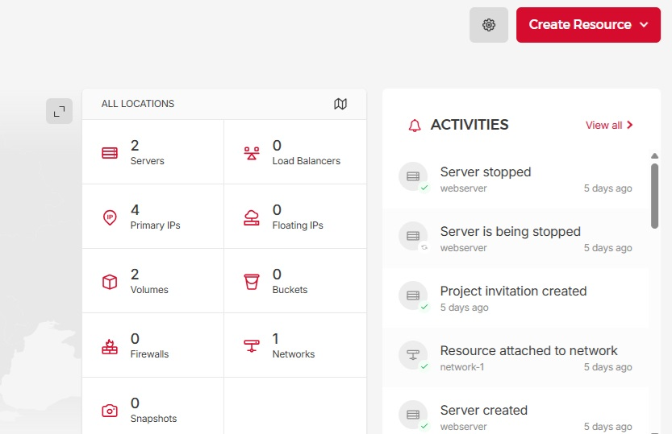

SCC
Brasil
os cloud gurus
Software Cloud Consulting
Your software development, cloud, consulting & shoring company
Migrate from AWS to Hetzner

By Wolfgang Unger
Introduction
Your are hosting your services and data on AWS, but since january 20, 2025 you think over this decision?
After all, AWS is an american company, hosting your data and services in Frankfurt, will not change this fact.
DSGVO, US CLoud Act (which may allow U.S. law enforcement agencies access to AWS servers not only in the US),
european sovereignty may be some of the keywords in your considerations.
So you want migrate your infrastucture from AWS to an european cloud provider.... I have choosen Hetzner as a good alternative for my analysis and blog
The million-dollar question
Intention is one thing feasibility another. Can you indeed migrate from AWS to Hetzner ?
After all AWS is now almost 20 years present and offers more than 200 services.
Lets try to answer this question on a higher level . We cant analyse your services in detail here, these
are too individual from customer to customer but lets look at the migration on a abstract level and ignore the service tier in detail for now.
Your Current Cloud Infrastructure
Lets define an example Infrastructure to approach the answer on our question:
- You have a multi-account environment in AWS with lets say a Master/Organisational Account and 3 Stage accounts (DEV, INT, PROD).
Of course it may be more accounts but lets keep it simple and after all this small multi account setup will do for the analysis.
- You have data stored on AWS, for example mainly on S3 and you are using some services like Route53, EC2, Loadbalancers, RDS, EKS and Lambda.
- You are hosting your source code in Gitlab or Github and you also use CI/CD outside of AWS, like Gitlab.
- You use IaC to deploy your infrastructure, which might be Terraform or CloudFormation.
Multi Account Setup
AWS got really mature and great Multi Account and Organisational Features with Consolidated Billing, Organisational Units, SCPs and more.
This has grown over years, a lot of this was not available when I started to work 2014 on AWS.
You won't find all these features on Hetzner yet, but you can setup multi account environments.
First option is of course open/create multiple Hetzner accounts. This is/was also the approach on AWS before Organisations and Landing Page facilitated this a lot.
All you need is a email address and a credit card, so you could use dev@yourcompany.com , int@yourcompany.com etc
But there is a second real good option.
Inside your account you can create 'Projects'. This is a concept you won't know from AWS
Inside these projects you can define your infrastructure, that means define VPCs, VMs and so on.
So these projects serve really good to create multiple environments for your stages like Dev, Int, Prod.
You can invite users to these projects and define those users for each projects different.
So this gives you a basic IAM.
But indeed just basic. There is not yet a IAM on Hetzner available you could compare to AWS IAM features.
The billing will be for the account, so all of your projects will be billed together.
Services and data
We cannot make a complete services comparison in this blog, probably a dedicated blog about this will follow, but lets have a look what Hetzner got to offer.
On the top right you can open this menu:
We will only focus on DNS and Cloud for today.
DNS ( Route53)
With this service you can create hosted zones and dns entries, so it can kind of replace Route53
Important to handle your domains and the forwarding to your services, loadbalancers and so on.
Cloud
If you switch to cloud you'll see pretty much so screenshot I have added for the multi account setup.
So on top level the projects, usage, activities, limits, support & referals.
If you select one of your projects, you will get an overview page over this projects, a landscape where your servers are and this menu on the right which also gives an inside of your project and its resources:

You can see, I got currently 2 servers, 2 volumes in my test project. If you click on 'Create resource' you will see pretty much the same resources.
So we got :
Network - The VPC in AWS. Essential. It also allows you to define the IP Mask, subnets, routes and more.
Firewalls - more or less Security Groups in AWS - Firewalls allow you to restrict or allow traffic based on rules
VMs - Similar to EC2 on AWS. A large selection of instances is available, this deserves a dedicated blog one day.
Volumes - Similar to EC2 EBS volumes. Youc can attach and detach a volume to a VM.
Primary IPs - the public IP address of your VM.
Floating IPs - Similar to Elastic IP on AWS. A Floating IP can be assigned and reassigned to any server at any time in any location.
Snapshots - Should be self explaining , a snapshot is a full copy of your server's disk
Load Balancer - you should be familar with this concept, it will distribute traffic between multiple target servers.
Buckets - Similar to S3 Buckets in AWS. But of course not yet with all S3 features you know from AWS
So for our example infrastructure, we used to have S3, EC2, Loadbalancers, RDS, EKS and Lambda on AWS:
- S3 and EC2 can be substituted pretty easy on Hetzner. Also Loadbalancers
- RDS becomes a little be more difficult, there is no managed database service yet on Hetzner, so you would have to install your Postgres, MySQL or any other Database on a VM and take care of updates on your own. This will be more work but also save costs.
- Same is valid for EKS, which was launched 2018 on AWS, you will have to setup you Kubernetes Cluster on your own on Hetzner using kubectl or other tools.
- Lambda is not available on Hetzner. So you have to replace them with a different architecture, which might by scripts on a server, sysadim, fission, apache openWhisk or other solutions.
So probably you will achieve to migrate your infrastructure to Hetzner, the effort and time will depend pretty much on what services you are currently using on AWS. If it's just EC2 then you will have a easy task, if you use a lot of managed services,
have deep lambda and for example event bridge integration it's gonna be a bigger challenge.
Git and CI/CD
If you already use Gitlab, Github, Jenkins and other non-native AWS build tools, you will have not much trouble on this part.
You will have to adapt your pipelines, technical users, tokens, target servers, but there should be no showstopper here.
IaC - Infrastructure as Code
If you are using Cloudformation or CDK on AWS, you should be aware these are not portable to other cloud providers !
Not to Azure, Google and of course also not on Hetzner.
If you are using Terraform, which was designed as multi plattform IaC tool from the very beginning, it was a good choice.
There is a Hetzner provider available for Terraform please have a look on this project
Conclusion
If you can migrate your Infrastructure from AWS to Hetzner will depend on your system architecture and services in use of course.
Also some other factors like what IaC Tool do you use, how important is a fine granular IAM for you, do you have a sophisticated multi account structure?
Once you have done a general analysis like this one here and your conclusion is, the migration is possible,
you can take a look on your services or applications in detail .
Depending on the service you use on AWS the migration strategy might be a simple Relocate like for VMs but might also become Replatform or Refactor
Have a look in this blog of us :
7 Cloud migration strategies
If you need help for your analysis or migration, you can contact us,
we would proudly help to get your architecture save and up to date with all best practices .
Contact us
Autor

Wolfgang Unger
AWS Architect & Developer
6 x AWS Certified
1 x Azure Certified
A Cloud Guru Instructor
Certified Oracle JEE Architect
Certified Scrum Master
Certified Java Programmer
Passionate surfer & guitar player